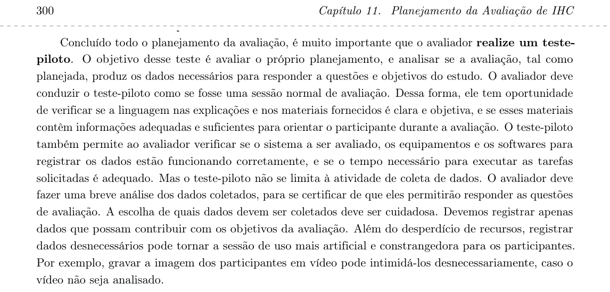
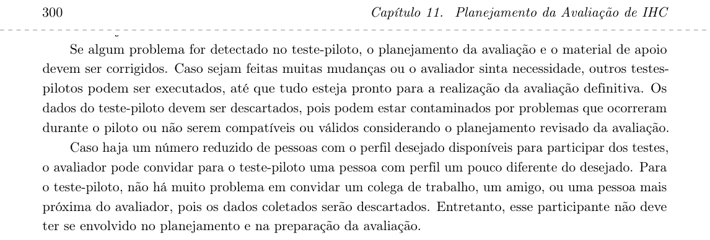
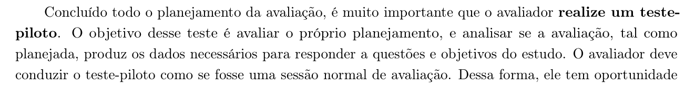
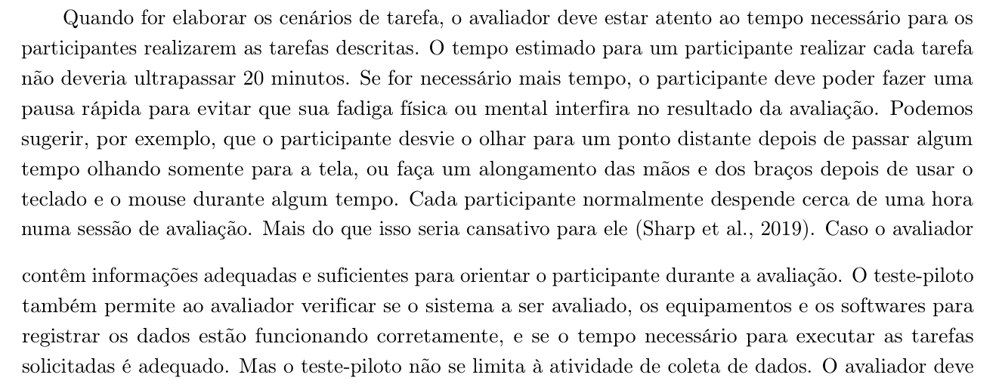
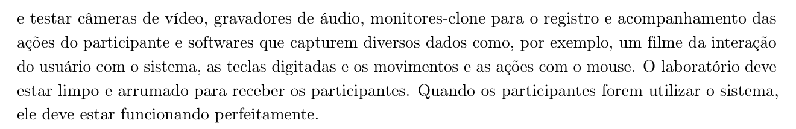
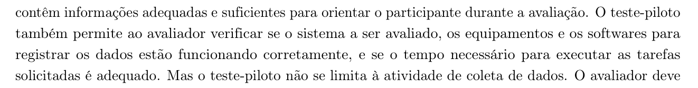
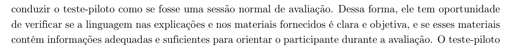

Tabela de Contribuição
| Membro | Contribuição |
|---|---|
| Daniel da Silva Batista | Elaboração dos itens TP-01 a TP-05, recortes do livro. |
| Arthur Sismene Carvalho | Elaboração dos itens TP-06 a TP-10, recortes do livro. |
| Pedro Rocha Ferreira Lima | Elaboração dos itens TP-11 a TP-15, recortes do livro. |
| Claude (Anthropic) | Apoio na organização da página e na extração dos recortes do livro (conforme Política de IA). |
Fonte: Daniel da Silva Batista, Arthur Sismene Carvalho e Pedro Rocha Ferreira Lima (2026).
Lista de Verificação de Teste-Piloto
1. Introdução
O teste-piloto é um ensaio da avaliação feito antes das sessões oficiais. Ele avalia o próprio planejamento: se as instruções são claras, se os equipamentos funcionam e se o tempo previsto é suficiente (BARBOSA et al., 2021).
Esta é a primeira versão (v1) desta lista, elaborada para a Verificação da Etapa 8, conduzida pelo método de inspeção de Fagan (FAGAN, 1976). Ela será aplicada, no passo de inspeção, aos seguintes artefatos do projeto:
- Planejamento e Execução do Teste-Piloto (Nível 1)
- Seções de teste-piloto dos relatos individuais dos protótipos de papel e de alta fidelidade
A lista tem 15 itens, e cada integrante do grupo elabora 5 deles. Cada item é uma pergunta objetiva, com as explicações necessárias entre parênteses, para que possa ser respondida por quem não conhece o artefato. Cada item indica o autor e a fonte. A Seção 3 consolida todos os itens em uma tabela, e a Seção 4 detalha cada um, com a pergunta e, logo abaixo, o recorte do livro que a fundamenta.
2. Critérios de Julgamento
Cada item admite uma única resposta:
- Sim — o artefato atende integralmente ao que a pergunta descreve;
- Não — o artefato não atende ao que a pergunta descreve ou não apresenta a informação;
- Incompleto — o artefato atende apenas em parte (por exemplo, em alguns quadros, tarefas ou participantes, mas não em todos).
3. Itens de Verificação
A Tabela 1 consolida os 15 itens de verificação da Lista de Verificação de Teste-Piloto:
Tabela 1: Itens da Lista de Verificação de Teste-Piloto
| ID | Pergunta de verificação | Autor | Fonte |
|---|---|---|---|
| TP-01 | O teste-piloto foi feito antes das sessões oficiais e conduzido como uma sessão completa (do termo de consentimento até a última pergunta)? | Daniel da Silva Batista | BARBOSA et al. (2021, p. 300) |
| TP-02 | O artefato informa o que o teste-piloto verificou: se as instruções e os materiais estão claros, se os equipamentos e a gravação funcionam e se o tempo previsto para as tarefas é suficiente? | Daniel da Silva Batista | BARBOSA et al. (2021, p. 300) |
| TP-03 | O artefato registra os problemas encontrados no teste-piloto e as correções feitas no planejamento ou no material antes das sessões oficiais? | Daniel da Silva Batista | BARBOSA et al. (2021, p. 300) |
| TP-04 | O artefato declara que os dados do teste-piloto foram descartados e não entram nos resultados da avaliação? | Daniel da Silva Batista | BARBOSA et al. (2021, p. 300) |
| TP-05 | O participante do teste-piloto é alguém de fora da equipe que planejou a avaliação (não ajudou a planejá-la nem a prepará-la)? | Daniel da Silva Batista | BARBOSA et al. (2021, p. 300) |
| TP-06 | O artefato registra que o participante do teste-piloto leu e assinou o termo de consentimento antes de a sessão começar, como acontecerá nas sessões oficiais? | Arthur Sismene Carvalho | BARBOSA et al. (2021, p. 300) |
| TP-07 | O artefato registra a duração real do teste-piloto e a compara com a duração prevista no planejamento, confirmando se o tempo estimado para as tarefas e para a sessão inteira é adequado? | Arthur Sismene Carvalho | BARBOSA et al. (2021, p. 300) |
| TP-08 | O artefato descreve o ambiente e os equipamentos utilizados no teste-piloto e registra se tudo funcionou conforme o planejado? | Arthur Sismene Carvalho | BARBOSA et al. (2021, p. 300) |
| TP-09 | O artefato confirma que a gravação de áudio e/ou vídeo foi testada e funcionou adequadamente durante o teste-piloto, garantindo que estará disponível nas sessões oficiais? | Arthur Sismene Carvalho | BARBOSA et al. (2021, p. 300) |
| TP-10 | O artefato registra se as tarefas e os materiais estavam claros para o participante — se ele entendeu o que devia fazer sem precisar pedir esclarecimentos ao avaliador? | Arthur Sismene Carvalho | BARBOSA et al. (2021, p. 300) |
| TP-11 | Depois do teste-piloto, o avaliador fez uma análise rápida dos dados obtidos para confirmar que eles permitem responder às perguntas da avaliação? | Pedro Rocha Ferreira Lima | BARBOSA et al. (2021, p. 300) |
| TP-12 | O teste-piloto foi usado para conferir se só os dados necessários estão sendo coletados, evitando gravar ou anotar o que não será analisado? | Pedro Rocha Ferreira Lima | BARBOSA et al. (2021, p. 300) |
| TP-13 | Se o planejamento mudou bastante depois do piloto, foi feito um novo teste-piloto antes das sessões oficiais? | Pedro Rocha Ferreira Lima | BARBOSA et al. (2021, p. 300) |
| TP-14 | O artefato informa se o protótipo ou sistema usado no piloto funcionou corretamente durante toda a sessão? | Pedro Rocha Ferreira Lima | BARBOSA et al. (2021, p. 300) |
| TP-15 | O participante do teste-piloto tem perfil parecido com o dos participantes reais, ou o artefato explica por que foi escolhida uma pessoa de perfil diferente? | Pedro Rocha Ferreira Lima | BARBOSA et al. (2021, p. 300) |
Fonte: Daniel da Silva Batista, Arthur Sismene Carvalho e Pedro Rocha Ferreira Lima (2026), conforme o autor de cada item.
4. Detalhamento dos Itens
4.1 TP-01 — Realização do teste-piloto
A Tabela 2 apresenta o item TP-01:
Tabela 2: Item TP-01 — Realização do teste-piloto
| Campo | Registro |
|---|---|
| Pergunta | O teste-piloto foi feito antes das sessões oficiais e conduzido como uma sessão completa (do termo de consentimento até a última pergunta)? |
| Autor | Daniel da Silva Batista |
| Fonte | BARBOSA et al. (2021, p. 300) |
Fonte: Daniel da Silva Batista (2026).
A Figura 1 reproduz o trecho do livro que fundamenta o item TP-01:
Figura 1: Referência Bibliográfica — Item TP-01 (Realização do teste-piloto)

Fonte: BARBOSA et al. (2021, p. 300).
4.2 TP-02 — O que o teste-piloto verifica
A Tabela 3 apresenta o item TP-02:
Tabela 3: Item TP-02 — O que o teste-piloto verifica
| Campo | Registro |
|---|---|
| Pergunta | O artefato informa o que o teste-piloto verificou: se as instruções e os materiais estão claros, se os equipamentos e a gravação funcionam e se o tempo previsto para as tarefas é suficiente? |
| Autor | Daniel da Silva Batista |
| Fonte | BARBOSA et al. (2021, p. 300) |
Fonte: Daniel da Silva Batista (2026).
A Figura 2 reproduz o trecho do livro que fundamenta o item TP-02:
Figura 2: Referência Bibliográfica — Item TP-02 (O que o teste-piloto verifica)

Fonte: BARBOSA et al. (2021, p. 300).
4.3 TP-03 — Correções após o teste-piloto
A Tabela 4 apresenta o item TP-03:
Tabela 4: Item TP-03 — Correções após o teste-piloto
| Campo | Registro |
|---|---|
| Pergunta | O artefato registra os problemas encontrados no teste-piloto e as correções feitas no planejamento ou no material antes das sessões oficiais? |
| Autor | Daniel da Silva Batista |
| Fonte | BARBOSA et al. (2021, p. 300) |
Fonte: Daniel da Silva Batista (2026).
A Figura 3 reproduz o trecho do livro que fundamenta o item TP-03:
Figura 3: Referência Bibliográfica — Item TP-03 (Correções após o teste-piloto)

Fonte: BARBOSA et al. (2021, p. 300).
4.4 TP-04 — Descarte dos dados do piloto
A Tabela 5 apresenta o item TP-04:
Tabela 5: Item TP-04 — Descarte dos dados do piloto
| Campo | Registro |
|---|---|
| Pergunta | O artefato declara que os dados do teste-piloto foram descartados e não entram nos resultados da avaliação? |
| Autor | Daniel da Silva Batista |
| Fonte | BARBOSA et al. (2021, p. 300) |
Fonte: Daniel da Silva Batista (2026).
A Figura 4 reproduz o trecho do livro que fundamenta o item TP-04:
Figura 4: Referência Bibliográfica — Item TP-04 (Descarte dos dados do piloto)

Fonte: BARBOSA et al. (2021, p. 300).
4.5 TP-05 — Participante do teste-piloto
A Tabela 6 apresenta o item TP-05:
Tabela 6: Item TP-05 — Participante do teste-piloto
| Campo | Registro |
|---|---|
| Pergunta | O participante do teste-piloto é alguém de fora da equipe que planejou a avaliação (não ajudou a planejá-la nem a prepará-la)? |
| Autor | Daniel da Silva Batista |
| Fonte | BARBOSA et al. (2021, p. 300) |
Fonte: Daniel da Silva Batista (2026).
A Figura 5 reproduz o trecho do livro que fundamenta o item TP-05:
Figura 5: Referência Bibliográfica — Item TP-05 (Participante do teste-piloto)

Fonte: BARBOSA et al. (2021, p. 300).
4.6 TP-06 — Termo de consentimento no piloto
A Tabela 7 apresenta o item TP-06:
Tabela 7: Item TP-06 — Termo de consentimento no piloto
| Campo | Registro |
|---|---|
| Pergunta | O artefato registra que o participante do teste-piloto leu e assinou o termo de consentimento antes de a sessão começar, como acontecerá nas sessões oficiais? |
| Autor | Arthur Sismene Carvalho |
| Fonte | BARBOSA et al. (2021, p. 300) |
Fonte: Arthur Sismene Carvalho (2026).
A Figura 6 reproduz o trecho do livro que fundamenta o item TP-06:
Figura 6: Referência Bibliográfica — Item TP-06 (Termo de consentimento no piloto)

Fonte: BARBOSA et al. (2021, p. 300).
4.7 TP-07 — Duração real vs. prevista
A Tabela 8 apresenta o item TP-07:
Tabela 8: Item TP-07 — Duração real vs. prevista
| Campo | Registro |
|---|---|
| Pergunta | O artefato registra a duração real do teste-piloto e a compara com a duração prevista no planejamento, confirmando se o tempo estimado para as tarefas e para a sessão inteira é adequado? |
| Autor | Arthur Sismene Carvalho |
| Fonte | BARBOSA et al. (2021, p. 300) |
Fonte: Arthur Sismene Carvalho (2026).
A Figura 7 reproduz o trecho do livro que fundamenta o item TP-07:
Figura 7: Referência Bibliográfica — Item TP-07 (Duração real vs. prevista)

Fonte: BARBOSA et al. (2021, p. 300).
4.8 TP-08 — Ambiente e equipamentos
A Tabela 9 apresenta o item TP-08:
Tabela 9: Item TP-08 — Ambiente e equipamentos
| Campo | Registro |
|---|---|
| Pergunta | O artefato descreve o ambiente e os equipamentos utilizados no teste-piloto e registra se tudo funcionou conforme o planejado? |
| Autor | Arthur Sismene Carvalho |
| Fonte | BARBOSA et al. (2021, p. 300) |
Fonte: Arthur Sismene Carvalho (2026).
A Figura 8 reproduz o trecho do livro que fundamenta o item TP-08:
Figura 8: Referência Bibliográfica — Item TP-08 (Ambiente e equipamentos)

Fonte: BARBOSA et al. (2021, p. 300).
4.9 TP-09 — Funcionamento da gravação
A Tabela 10 apresenta o item TP-09:
Tabela 10: Item TP-09 — Funcionamento da gravação
| Campo | Registro |
|---|---|
| Pergunta | O artefato confirma que a gravação de áudio e/ou vídeo foi testada e funcionou adequadamente durante o teste-piloto, garantindo que estará disponível nas sessões oficiais? |
| Autor | Arthur Sismene Carvalho |
| Fonte | BARBOSA et al. (2021, p. 300) |
Fonte: Arthur Sismene Carvalho (2026).
A Figura 9 reproduz o trecho do livro que fundamenta o item TP-09:
Figura 9: Referência Bibliográfica — Item TP-09 (Funcionamento da gravação)

Fonte: BARBOSA et al. (2021, p. 300).
4.10 TP-10 — Clareza das tarefas
A Tabela 11 apresenta o item TP-10:
Tabela 11: Item TP-10 — Clareza das tarefas
| Campo | Registro |
|---|---|
| Pergunta | O artefato registra se as tarefas e os materiais estavam claros para o participante — se ele entendeu o que devia fazer sem precisar pedir esclarecimentos ao avaliador? |
| Autor | Arthur Sismene Carvalho |
| Fonte | BARBOSA et al. (2021, p. 300) |
Fonte: Arthur Sismene Carvalho (2026).
A Figura 10 reproduz o trecho do livro que fundamenta o item TP-10:
Figura 10: Referência Bibliográfica — Item TP-10 (Clareza das tarefas)

Fonte: BARBOSA et al. (2021, p. 300).
4.11 TP-11 — Análise rápida dos dados do piloto
A Tabela 12 apresenta o item TP-11:
Tabela 12: Item TP-11 — Análise rápida dos dados do piloto
| Campo | Registro |
|---|---|
| Pergunta | Depois do teste-piloto, o avaliador fez uma análise rápida dos dados obtidos para confirmar que eles permitem responder às perguntas da avaliação? |
| Autor | Pedro Rocha Ferreira Lima |
| Fonte | BARBOSA et al. (2021, p. 300) |
Fonte: Pedro Rocha Ferreira Lima (2026).
A Figura 11 reproduz o trecho do livro que fundamenta o item TP-11:
Figura 11: Referência Bibliográfica — Item TP-11 (Análise rápida dos dados do piloto)

Fonte: BARBOSA et al. (2021, p. 300).
4.12 TP-12 — Somente os dados necessários
A Tabela 13 apresenta o item TP-12:
Tabela 13: Item TP-12 — Somente os dados necessários
| Campo | Registro |
|---|---|
| Pergunta | O teste-piloto foi usado para conferir se só os dados necessários estão sendo coletados, evitando gravar ou anotar o que não será analisado? |
| Autor | Pedro Rocha Ferreira Lima |
| Fonte | BARBOSA et al. (2021, p. 300) |
Fonte: Pedro Rocha Ferreira Lima (2026).
A Figura 12 reproduz o trecho do livro que fundamenta o item TP-12:
Figura 12: Referência Bibliográfica — Item TP-12 (Somente os dados necessários)

Fonte: BARBOSA et al. (2021, p. 300).
4.13 TP-13 — Novo piloto após mudanças
A Tabela 14 apresenta o item TP-13:
Tabela 14: Item TP-13 — Novo piloto após mudanças
| Campo | Registro |
|---|---|
| Pergunta | Se o planejamento mudou bastante depois do piloto, foi feito um novo teste-piloto antes das sessões oficiais? |
| Autor | Pedro Rocha Ferreira Lima |
| Fonte | BARBOSA et al. (2021, p. 300) |
Fonte: Pedro Rocha Ferreira Lima (2026).
A Figura 13 reproduz o trecho do livro que fundamenta o item TP-13:
Figura 13: Referência Bibliográfica — Item TP-13 (Novo piloto após mudanças)

Fonte: BARBOSA et al. (2021, p. 300).
4.14 TP-14 — Funcionamento do protótipo no piloto
A Tabela 15 apresenta o item TP-14:
Tabela 15: Item TP-14 — Funcionamento do protótipo no piloto
| Campo | Registro |
|---|---|
| Pergunta | O artefato informa se o protótipo ou sistema usado no piloto funcionou corretamente durante toda a sessão? |
| Autor | Pedro Rocha Ferreira Lima |
| Fonte | BARBOSA et al. (2021, p. 300) |
Fonte: Pedro Rocha Ferreira Lima (2026).
A Figura 14 reproduz o trecho do livro que fundamenta o item TP-14:
Figura 14: Referência Bibliográfica — Item TP-14 (Funcionamento do protótipo no piloto)

Fonte: BARBOSA et al. (2021, p. 300).
4.15 TP-15 — Perfil do participante do piloto
A Tabela 16 apresenta o item TP-15:
Tabela 16: Item TP-15 — Perfil do participante do piloto
| Campo | Registro |
|---|---|
| Pergunta | O participante do teste-piloto tem perfil parecido com o dos participantes reais, ou o artefato explica por que foi escolhida uma pessoa de perfil diferente? |
| Autor | Pedro Rocha Ferreira Lima |
| Fonte | BARBOSA et al. (2021, p. 300) |
Fonte: Pedro Rocha Ferreira Lima (2026).
A Figura 15 reproduz o trecho do livro que fundamenta o item TP-15:
Figura 15: Referência Bibliográfica — Item TP-15 (Perfil do participante do piloto)

Fonte: BARBOSA et al. (2021, p. 300).
5. Referências Bibliográficas
[1] BARBOSA, Simone D. J.; SILVA, Bruno S. da; SILVEIRA, Milene S.; GASPARINI, Isabela; DARIN, Ticianne; BARBOSA, Gabriel D. J. Interação Humano-Computador e Experiência do Usuário. 1. ed. Autopublicação, 2021. ISBN: 978-65-00-19677-1.
[2] FAGAN, Michael E. Design and code inspections to reduce errors in program development. IBM Systems Journal, v. 15, n. 3, p. 182-211, 1976.
[3] SALES, André Barros de. Plano de ensino FIHC 022026 – Turma 01. Brasília: FCTE/UnB, 2026.
6. Histórico de Versões
| Versão | Data | Descrição | Autor(es) | Revisor(es) |
|---|---|---|---|---|
1.0 |
21/11/2026 | Criação da lista (v1): itens TP-01 a TP-05, com fonte por página e recorte do livro; itens TP-06 a TP-20 reservados aos demais integrantes. | Daniel da Silva Batista | — |
1.1 |
22/11/2026 | Adição dos itens TP-06 a TP-10: perguntas de verificação, fontes e recortes do livro. | Arthur Sismene Carvalho | — |
1.2 |
22/11/2026 | Elaboração dos itens TP-11 a TP-15, com fonte por página e recorte do livro. | Pedro Rocha Ferreira Lima | — |